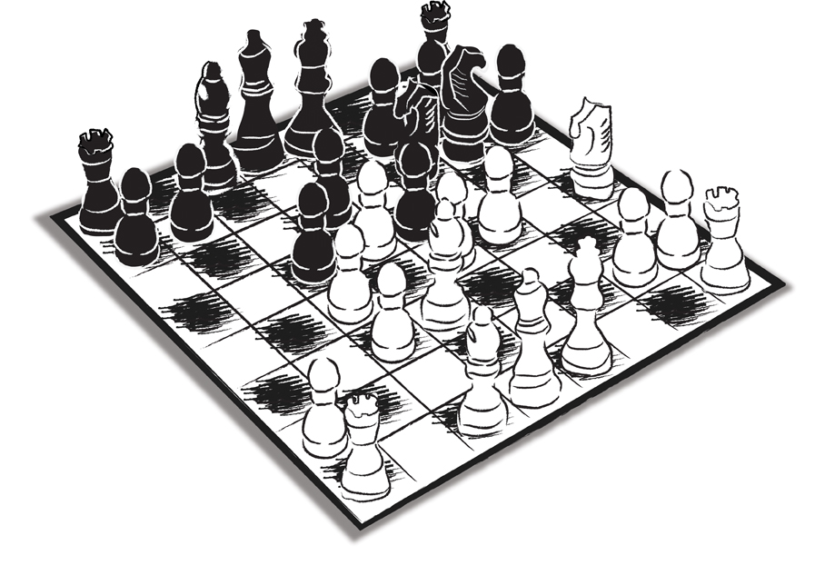

Saat akşamın dokuzu… Eşimle koltuklarımıza kurulmuşuz. Çok hoş bir film izliyoruz. Yüksek çözünürlük ve olağanüstü bir ses düzeniyle… Çaylar, kahveler; keyfimiz yerinde…
Birden cep telefonu çalmaya başladı. Göz ucuyla baktım. Numara gözükmüyor… Oralı olmadım. Çalması bittikten sonra sessize aldım; filmi izlemeye devam ettim. İki dakika sonra baktım telefonun ışığı yanıp sönmeye devam ediyor. Arayan ısrarlı.
Genelde, ‘gizli numara’ aradı mı, elimi sürmem. Sen benim yerimi yurdumu, kim olduğumu bileceksin; ancak kendini gizleyeceksin… Yok canım!
Bu sefer şeytan dürttü. Akşamın bir hayli ilerlemiş saatinde bu kadar ısrar ne ola! Üçüncü çalışta açtım.
“Sayın Ali Uğur Saydam ile mi görüşüyoruz?”
Aslında kaydî (resmî) adım Uğur… Göbek adım ise, annemin babası Ali Sadullah Bey’den yola çıkılarak Ali olarak konmuş. Ağabeyimin adı Onur; onun da göbek adı babamın babasından geliyor: Hasan… Tesadüf bu ya, annem bakmış bir komşusunun kedisinin adı Uğur; diğeri köpeğini Uğur diye çağırıyor… Hemen bana Ali demeye başlamış.
Bu durum hayatımı bir hayli karıştırmıştır. Bir keresinde İsviçre’de okurken babamın bana yolladığı havaleyi alıcı hanesine ‘Ali Saydam’ yazdığı için tahsil edememiştim de para geri gitmişti. O gün bugün, çocuklarına iki isim koyanların, o zavallıya ileride ne büyük zorluklar çıkarmak üzere olduklarını dilim döndüğünce anlatmaya çalışırım.
Ancak bana resmî evraka bakarak hitap edenler Ali Uğur Bey ya da Uğur Bey derler. Resmî daireler… Benim resmen kayıt olduğum sistemlerin veri tabanını kullanan pazarlama şirketleri, çağrı merkezleri vs…
“Buyurun,” dedim, “benim”…
“Devlet Bakanımız Sayın Beşir Atalay görüşecekler.”
Sayın Bakan’la 1990’lardan beri tanışıyorduk. Dostluğumuz, Sayın Atalay Meclis’e girdikten sonra, sırasıyla Devlet, Millî Eğitim, İçişleri Bakanı olduğu günlerde de devam etti.
- Ali Bey, sizi geç saatte rahatsız ediyoruz, kusura bakmayın. Ancak sizin de yazılarınızda sık sık değindiğiniz şu YÖK meselesini Sayın Millî Eğitim Bakanımız’la görüşmek üzere sizi Ankara’ya davet edebilir miyiz?
- Tabii Sayın Bakanım, onur duyarım. Hangi gün emredersiniz?
- Bu akşam Ali Bey...
- Sayın Bakanım, akşam oldu çoktan…
- Bizim için değil Ali Bey. Biz çalışmaya devam ediyoruz. Gülüştük… Emir büyük yerden geliyordu. Büyük olasılıkla babamdan mirastı bana. Devlet kanadından gelecek her ‘davet’ emir olarak görülür ve o davete mutlaka icabet edilirdi. Bakan her zamanki nezaketini sürdürüyordu.
- Tabii ki, durumunuz müsait değilse, başka zamana da erteleyebiliriz. Gelecekseniz de doğru havaalanına gidin, ilk uçakta biz yer ayırtırız.
- Sağ olun Sayın Bakanım, hemen arabaya atlayıp geliyorum. Gece yarısı oradayım. Nereye gitmeliyim?
- Millî Eğitim Bakanlığı’na. Ben de orada olacağım. Beşir Bey benim uçaklara binme konusunda çok da sevdalı olmadığımı nereden bilecekti… Ben de karayolundan gitme nedenimi uzun uzun açıklamadım doğrusu.
- TEM’e çok yakınız. Uçaktan daha çabuk bile gelebiliriz efendim…
- Tamam Ali Bey, sizi bekliyoruz.
Hemen şoförümüz Ercan Bey’i aradım: “Ankara’ya gidiyoruz. Yola çık seni alırım…”
YÖK konusunda yay gibi gerilmiştim. AK Parti, seçim bildirgelerinde, parti programlarında, neredeyse tüm siyaset belgelerinde YÖK konusunda son derece net bir tavır sergilemişti. Bu, onlara büyük itibar sağlamıştı. Özellikle de akademik çevrelerde.
Siyaset sahnesine bağımsız, yeni bir parti olarak çıktıklarında YÖK konusunda aldıkları net pozisyon onları diğer partilerin önünde ‘ilerlemeci’ bir noktaya taşımıştı. Zaten o günlerde üniversite öğretim üyeleri arasında bir araştırma yapılsa YÖK’ten yana sesini yükseltecek ‘hoca’ bulmak zor olurdu. Bu konuda öylesine bir ‘millî mutabakat’ vardı yani…
Fakat yakalanmış olan bu ‘dalga boyu’ siyasi sörf için zamanında ve yerinde, gereken etkililikte kullanılmayınca, hava birden dönüverdi. Muhaliflerce, YÖK’ten yana olmak ve YÖK’e karşı olmak, AK Parti’den yana olmak ve AK Parti’ye karşı olmak şeklinde konumlandırılıverdi ve YÖK’e sonuna kadar karşı tavır almış akademisyenler anında YÖK’ün bir numaralı savunucuları haline geliverdiler.
Ben ise meseleye siyasi iletişim noktasından bakıyor ve bir iktidar partisinin böyle bir fırsatı nasıl tepebilmiş olduğunu anlayamadığımı söyleyip duruyordum.
Sayın Atalay benim ısrarlı tespitlerimden zamanın Millî Eğitim Bakanı Hüseyin Çelik’e söz etmiş, o da bunun üzerine “O zaman çağırın lütfen, ne diyormuş Ali Bey, bir dinleyelim,” demiş.
Yol boyunca bütün konuşmaları kurguladım. Ne diyeceğimi, ne tür bir tutum içinde olacağımı belirledim. Meşhur temrinlerimi ‘ifa ettim’… Gaf konusundaki ustalığımı hiçbir zaman unutmuyordum. O yüzden hata oranını sıfıra indirmek için tüm Ankara yolu boyunca ‘çalıştım’…
Millî Eğitim Bakanlığı’na yaklaşırken bizim geleceğimizin tüm kontrol noktalarına bildirilmiş olduğunu fark ettik. Gecenin bir saati, “Sayın Bakan’la görüşeceğiz,” diye sökün eden iki adamın, öyle ellerini kollarını sallaya sallaya bakanlık koridorlarında tur atmalarına izin vermelerini beklememek gerekirdi…
İnsanların âdeta ‘heyecanları yatışsın’ diye dinlendirildikleri ve hedefe ancak yavaş yavaş yaklaşmalarının sağlandığı, aynı zamanda birer engel olarak da kullanılan, gecenin o saatinde ise inin cinin top oynadığı ‘basınç odalarını’ jet hızıyla aşarak Bakan’ın odasından içeriye girdiğimde saatler 00.45’i gösteriyordu. Bakan Atalay karşıladı beni:
- Çok iyi geldiniz Ali Bey. Yolculuk nasıl geçti?
- Daha iyi geçemezdi. Yollar çok tenha idi.
- Biz de tam sizden söz ediyorduk. İşte o zaman gördüm odada kimlerin olduğunu… Gözüm Millî Eğitim Bakanı Hüseyin Çelik’e ve daha sonraları hükümete Dışişleri Bakanı sıfatıyla katılacak olan Prof. Dr. Ahmet Davutoğlu’na takıldı. Onun dışında en az beş kişi daha vardı odada. Çelik’in makam masasının çevresinde yarım ay şeklinde oturuyorlardı.
- Yabancı yok… Arkadaşları tanıştırayım. Bakan herkesi tek tek bana takdim etti. Gel de kimin kim olduğunu aklında tut. Ben takılmışım YÖK’e… Kafamın her köşesinde yolda kurduğum senaryolar. “Adınız neydi, efendim?” diye sorsalar, “Yök,” diyeceğim, “Yök Saydam…” Özetle, odada bulunan bütün beyefendilerin hepsiyle tanıştırılmıştım, ancak hiçbirini kaydetmemiştim. Sayın Çelik sonunda konuya girdi:
- Ne diyorsunuz şu YÖK işine Ali Bey?
- Ne diyeyim Sayın Bakan, iyisi mi size durumu bir futbol sahnesi ile anlatmaya çalışayım. Kaleci çıkmış gitmiş. Top altı pasın ortasında bir yerde duruyor. Kale bomboş. Siz, top ve kale… Baş başasınız… Sadece yuvarlayacaksınız topu kaleye. O kadar… Oysa siz inisiyatifi gereksiz yere rekabete kaptırdınız.
Benim ‘tirad’ bu minval üzre devam etti gitti. Arada kendi kendimi ısıttığımı hissediyordum. Ancak haddimi aşmadıkça bir sakıncası yoktu.
Benim her zaman savunduğum ‘katılımcı modeli’ anlattım. Batı’nın bugün büyük heyecanla sahiplendiği, Engagement Management (Bağlılık Yönetimi) yaklaşımının bizdeki karşılığına aşağı yukarı tekabül edebilecek, ‘istişare, ikna ve ittifak’ sözcüklerinin baş harflerinden oluşturarak “3İ” adını verdiğim modeli birkaç kez kitapta, gazetede ve dergide yazmış olmama rağmen bir kez de o gece orada uzun uzun anlattım. Ve nihayet bu modelin hükümetin YÖK konusundaki siyasi iletişim çalışmalarına nasıl uyarlanabileceğine örnek teşkil edecek somut eylem planlarından söz ettim.
Çok güzel…
Dursana orada… Bir sussana artık…
Hayır. İlle de kendini sadece ısıtmayacak, giderek fokur fokur kaynatacaksın da…
- Bu siyasi iletişim aksiyonlarının sözcüsü ve lideri tabii ki Sayın Başbakan’dır (Burada da bir şey yok)… Sayın Başbakan’ın konuşmalarını kim yazıyorsa, son derece başarılı (bunda da bir şey yokmuş gibi görünse de gelecek gafın habercisi olan ön tonlamayı hissedebilsem ne iyi olurmuş)… Ancak bazı konuşmaları, stratejik olmaktan çok öte, taktik düzeyde seyredebiliyor ve 3İ’den kopabiliyor; katılımcılığın uzağına düşebiliyor. (O zaman henüz Dolmabahçe ‘Demokratik Açılım Toplantıları’ başlamadığı için 3İ’ye örnek vereceğim somut stratejik proje de pek yok ortada. Bir tek Sayın Atalay’ın mükemmel bir uygulamayla yönettiği Basın Yasası öncesi Bilkent’te düzenlediği, hasbelkader hazırlık çalışmalarına fikri düzeyde katıldığım ‘1. İletişim Zirvesi’ var.)
Bu arada kimse de beni uyarmıyor: “Oğlum kaptırdın gidiyorsun. Sana, ‘Başbakan ne yapıyor, bir eleştirir misiniz lütfen,’ diye soran mı var?”, “Sana mı kalmış, Başbakan’ın iletişim reflekslerini tartışmak!...” Hayır ben devam edeceğim. Kaptırmışım bir kere…
- Mesela bugünkü konuşması… Kim yazmışsa, ateşe atmış Sayın Başbakan’ı da, YÖK siyasetini de…
…
Uzunca bir sessizlik…
Herkes şöyle birbirine baktı… Eğer, “Teşekkür ederiz Ali Bey, toplantıyı bitirebiliriz. Geç oldu zaten,” demedilerse, kibarlıklarındandı…
Beşir Atalay bozdu sessizliği:
- Ali Bey, tanışmıyorsunuz herhalde. Ben sizi Sayın Nabi Avcı’yla tanıştırayım. Sayın Başbakan’ın konuşmalarını o kaleme alıyor. Bugünkünü de o yazdı.
Soluma doğru döndüm… Nabi Hoca yanımda oturuyordu.
Tanımaz mıyım, çok iyi tanıyordum. Türkiye’nin yetiştirdiği en derinlikli, donanımlı iletişimcilerdendi. ODTÜ’nün Siyaset Bilimi ve Uluslararası İlişkiler Bölümü’nü bitirmişti. İletişim hocasıydı. Anadolu Üniversitesi’nde ve İstanbul Bilgi Üniversitesi’nde iletişim felsefesi ve iletişim sosyolojisi üzerine dersler vermişti. Yayınlanmış kitapları vardı. Millî Eğitim Bakanlığı’nda ve Başbakanlık’ta danışman olarak çalışmıştı. Halen Başbakanlık Başdanışmanı’ydı. Son derece mütevazı bir duruşu vardı. Ön plana çıkmayı hiç sevmezdi.
Hay Allah… Yine gol yemiştik…
Toparlamak için biraz uğraştım… Baktım nafile… Zaten konuşacak fazla bir konu da kalmamıştı. Vedalaştık. Ağzımda buruk bir tat… İstanbul’un yolunu tuttum…